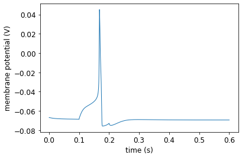
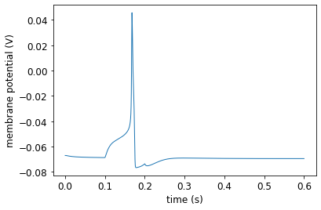
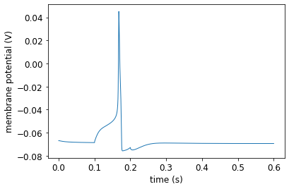
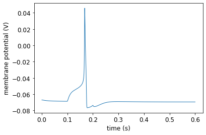

Interactive multi-compartment OLM cell example
Contents
Interactive multi-compartment OLM cell example¶
To run this interactive Jupyter Notebook, please click on the rocket icon 🚀 in the top panel. For more information, please see how to use this documentation. Please uncomment the line below if you use the Google Colab. (It does not include these packages by default).
#%pip install pyneuroml neuromllite NEURON
#!/usr/bin/env python3
"""
Multi-compartmental OLM cell example
File: olm-example.py
Copyright 2021 NeuroML contributors
Authors: Padraig Gleeson, Ankur Sinha
"""
from neuroml import (NeuroMLDocument, IncludeType, Population, PulseGenerator, ExplicitInput, Network, SegmentGroup, Member, Property, Include, Instance, Location)
from CellBuilder import (create_cell, add_segment, add_channel_density, set_init_memb_potential, set_resistivity, set_specific_capacitance, get_seg_group_by_id)
from pyneuroml import pynml
from pyneuroml.lems import LEMSSimulation
import numpy as np
The CellBuilder module file can be found in the same folder as the Python script. It is used to define the helper functions that we use in our main file.
Declaring the NeuroML model¶
Create the cell¶
In this example, we do not create the ion channels. We include ion channels that are already provided in NeuroML files.
def create_olm_cell():
"""Create the complete cell.
:returns: cell object
"""
nml_cell_doc = NeuroMLDocument(id="oml_cell")
cell = create_cell("olm")
nml_cell_file = cell.id + ".cell.nml"
# Add two soma segments
diam = 10.0
soma_0 = add_segment(cell,
prox=[0.0, 0.0, 0.0, diam],
dist=[0.0, 10., 0.0, diam],
name="Seg0_soma_0",
group="soma_0")
soma_1 = add_segment(cell,
prox=None,
dist=[0.0, 10. + 10., 0.0, diam],
name="Seg1_soma_0",
parent=soma_0,
group="soma_0")
# Add axon segments
diam = 1.5
axon_0 = add_segment(cell,
prox=[0.0, 0.0, 0.0, diam],
dist=[0.0, -75, 0.0, diam],
name="Seg0_axon_0",
parent=soma_0,
fraction_along=0.0,
group="axon_0")
axon_1 = add_segment(cell,
prox=None,
dist=[0.0, -150, 0.0, diam],
name="Seg1_axon_0",
parent=axon_0,
group="axon_0")
# Add 2 dendrite segments
diam = 3.0
dend_0_0 = add_segment(cell,
prox=[0.0, 20, 0.0, diam],
dist=[100, 120, 0.0, diam],
name="Seg0_dend_0",
parent=soma_1,
fraction_along=1,
group="dend_0")
dend_1_0 = add_segment(cell,
prox=None,
dist=[177, 197, 0.0, diam],
name="Seg1_dend_0",
parent=dend_0_0,
fraction_along=1,
group="dend_0")
dend_0_1 = add_segment(cell,
prox=[0.0, 20, 0.0, diam],
dist=[-100, 120, 0.0, diam],
name="Seg0_dend_1",
parent=soma_1,
fraction_along=1,
group="dend_1")
dend_1_1 = add_segment(cell,
prox=None,
dist=[-177, 197, 0.0, diam],
name="Seg1_dend_1",
parent=dend_0_1,
fraction_along=1,
group="dend_1")
# XXX: For segment groups to be correctly mapped to sections in NEURON,
# they must include the correct neurolex ID
for section_name in ["soma_0", "axon_0", "dend_0", "dend_1"]:
section_group = get_seg_group_by_id(section_name, cell)
section_group.neuro_lex_id = 'sao864921383'
den_seg_group = get_seg_group_by_id("dendrite_group", cell)
den_seg_group.includes.append(Include(segment_groups="dend_0"))
den_seg_group.includes.append(Include(segment_groups="dend_1"))
den_seg_group.properties.append(Property(tag="color", value="0.8 0 0"))
ax_seg_group = get_seg_group_by_id("axon_group", cell)
ax_seg_group.includes.append(Include(segment_groups="axon_0"))
ax_seg_group.properties.append(Property(tag="color", value="0 0.8 0"))
soma_seg_group = get_seg_group_by_id("soma_group", cell)
soma_seg_group.includes.append(Include(segment_groups="soma_0"))
soma_seg_group.properties.append(Property(tag="color", value="0 0 0.8"))
# Other cell properties
set_init_memb_potential(cell, "-67mV")
set_resistivity(cell, "0.15 kohm_cm")
set_specific_capacitance(cell, "1.3 uF_per_cm2")
# channels
# leak
add_channel_density(cell, nml_cell_doc,
cd_id="leak_all",
cond_density="0.01 mS_per_cm2",
ion_channel="leak_chan",
ion_chan_def_file="olm-example/leak_chan.channel.nml",
erev="-67mV",
ion="non_specific")
# HCNolm_soma
add_channel_density(cell, nml_cell_doc,
cd_id="HCNolm_soma",
cond_density="0.5 mS_per_cm2",
ion_channel="HCNolm",
ion_chan_def_file="olm-example/HCNolm.channel.nml",
erev="-32.9mV",
ion="h",
group="soma_group")
# Kdrfast_soma
add_channel_density(cell, nml_cell_doc,
cd_id="Kdrfast_soma",
cond_density="73.37 mS_per_cm2",
ion_channel="Kdrfast",
ion_chan_def_file="olm-example/Kdrfast.channel.nml",
erev="-77mV",
ion="k",
group="soma_group")
# Kdrfast_dendrite
add_channel_density(cell, nml_cell_doc,
cd_id="Kdrfast_dendrite",
cond_density="105.8 mS_per_cm2",
ion_channel="Kdrfast",
ion_chan_def_file="olm-example/Kdrfast.channel.nml",
erev="-77mV",
ion="k",
group="dendrite_group")
# Kdrfast_axon
add_channel_density(cell, nml_cell_doc,
cd_id="Kdrfast_axon",
cond_density="117.392 mS_per_cm2",
ion_channel="Kdrfast",
ion_chan_def_file="olm-example/Kdrfast.channel.nml",
erev="-77mV",
ion="k",
group="axon_group")
# KvAolm_soma
add_channel_density(cell, nml_cell_doc,
cd_id="KvAolm_soma",
cond_density="4.95 mS_per_cm2",
ion_channel="KvAolm",
ion_chan_def_file="olm-example/KvAolm.channel.nml",
erev="-77mV",
ion="k",
group="soma_group")
# KvAolm_dendrite
add_channel_density(cell, nml_cell_doc,
cd_id="KvAolm_dendrite",
cond_density="2.8 mS_per_cm2",
ion_channel="KvAolm",
ion_chan_def_file="olm-example/KvAolm.channel.nml",
erev="-77mV",
ion="k",
group="dendrite_group")
# Nav_soma
add_channel_density(cell, nml_cell_doc,
cd_id="Nav_soma",
cond_density="10.7 mS_per_cm2",
ion_channel="Nav",
ion_chan_def_file="olm-example/Nav.channel.nml",
erev="50mV",
ion="na",
group="soma_group")
# Nav_dendrite
add_channel_density(cell, nml_cell_doc,
cd_id="Nav_dendrite",
cond_density="23.4 mS_per_cm2",
ion_channel="Nav",
ion_chan_def_file="olm-example/Nav.channel.nml",
erev="50mV",
ion="na",
group="dendrite_group")
# Nav_axon
add_channel_density(cell, nml_cell_doc,
cd_id="Nav_axon",
cond_density="17.12 mS_per_cm2",
ion_channel="Nav",
ion_chan_def_file="olm-example/Nav.channel.nml",
erev="50mV",
ion="na",
group="axon_group")
nml_cell_doc.cells.append(cell)
pynml.write_neuroml2_file(nml_cell_doc, nml_cell_file, True, True)
return nml_cell_file
Create the network¶
def create_olm_network():
"""Create the network
:returns: name of network nml file
"""
net_doc = NeuroMLDocument(id="network",
notes="OLM cell network")
net_doc_fn = "olm_example_net.nml"
net_doc.includes.append(IncludeType(href=create_olm_cell()))
# Create a population: convenient to create many cells of the same type
pop = Population(id="pop0", notes="A population for our cell",
component="olm", size=1, type="populationList")
pop.instances.append(Instance(id=1, location=Location(0., 0., 0.)))
# Input
pulsegen = PulseGenerator(id="pg_olm", notes="Simple pulse generator", delay="100ms", duration="100ms", amplitude="0.08nA")
exp_input = ExplicitInput(target="pop0[0]", input="pg_olm")
net = Network(id="single_olm_cell_network", note="A network with a single population")
net_doc.pulse_generators.append(pulsegen)
net.explicit_inputs.append(exp_input)
net.populations.append(pop)
net_doc.networks.append(net)
pynml.write_neuroml2_file(nml2_doc=net_doc, nml2_file_name=net_doc_fn, validate=True)
return net_doc_fn
Plot the data we record¶
def plot_data(sim_id):
"""Plot the sim data.
Load the data from the file and plot the graph for the membrane potential
using the pynml generate_plot utility function.
:sim_id: ID of simulaton
"""
data_array = np.loadtxt(sim_id + ".dat")
pynml.generate_plot([data_array[:, 0]], [data_array[:, 1]], "Membrane potential (soma seg 0)", show_plot_already=False, save_figure_to=sim_id + "_seg0_soma0-v.png", xaxis="time (s)", yaxis="membrane potential (V)")
pynml.generate_plot([data_array[:, 0]], [data_array[:, 2]], "Membrane potential (soma seg 1)", show_plot_already=False, save_figure_to=sim_id + "_seg1_soma0-v.png", xaxis="time (s)", yaxis="membrane potential (V)")
pynml.generate_plot([data_array[:, 0]], [data_array[:, 3]], "Membrane potential (axon seg 0)", show_plot_already=False, save_figure_to=sim_id + "_seg0_axon0-v.png", xaxis="time (s)", yaxis="membrane potential (V)")
pynml.generate_plot([data_array[:, 0]], [data_array[:, 4]], "Membrane potential (axon seg 1)", show_plot_already=False, save_figure_to=sim_id + "_seg1_axon0-v.png", xaxis="time (s)", yaxis="membrane potential (V)")
Create and run the simulaton¶
def main():
"""Main function
Include the NeuroML model into a LEMS simulation file, run it, plot some
data.
"""
# Simulation bits
sim_id = "olm_example_sim"
simulation = LEMSSimulation(sim_id=sim_id, duration=600, dt=0.01, simulation_seed=123)
# Include the NeuroML model file
simulation.include_neuroml2_file(create_olm_network())
# Assign target for the simulation
simulation.assign_simulation_target("single_olm_cell_network")
# Recording information from the simulation
simulation.create_output_file(id="output0", file_name=sim_id + ".dat")
simulation.add_column_to_output_file("output0", column_id="pop0_0_v", quantity="pop0[0]/v")
simulation.add_column_to_output_file("output0",
column_id="pop0_0_v_Seg0_soma_0",
quantity="pop0/0/olm/0/v")
simulation.add_column_to_output_file("output0",
column_id="pop0_0_v_Seg1_soma_0",
quantity="pop0/0/olm/1/v")
simulation.add_column_to_output_file("output0",
column_id="pop0_0_v_Seg0_axon_0",
quantity="pop0/0/olm/2/v")
simulation.add_column_to_output_file("output0",
column_id="pop0_0_v_Seg1_axon_0",
quantity="pop0/0/olm/3/v")
simulation.add_column_to_output_file("output0",
column_id="pop0_0_v_Seg0_dend_0",
quantity="pop0/0/olm/4/v")
simulation.add_column_to_output_file("output0",
column_id="pop0_0_v_Seg1_dend_0",
quantity="pop0/0/olm/6/v")
simulation.add_column_to_output_file("output0",
column_id="pop0_0_v_Seg0_dend_1",
quantity="pop0/0/olm/5/v")
simulation.add_column_to_output_file("output0",
column_id="pop0_0_v_Seg1_dend_1",
quantity="pop0/0/olm/7/v")
# Save LEMS simulation to file
sim_file = simulation.save_to_file()
# Run the simulation using the NEURON simulator
pynml.run_lems_with_jneuroml_neuron(sim_file, max_memory="2G", nogui=True,
plot=False, skip_run=False)
# Plot the data
plot_data(sim_id)
if __name__ == "__main__":
main()
pyNeuroML >>> Running jnml on olm.cell.nml with pre args: -validate, post args: , in dir: ., verbose: True, report: True, exit on fail: False
pyNeuroML >>> Executing: (java -Xmx400M -jar "/usr/share/java/jNeuroML-0.10.3.jar" -validate "olm.cell.nml" ) in directory: .
pyNeuroML >>> *** Problem running command:
pyNeuroML >>> Command 'java -Xmx400M -jar "/usr/share/java/jNeuroML-0.10.3.jar" -validate "olm.cell.nml" ' returned non-zero exit status 1.
pyNeuroML >>> jNeuroML >> jNeuroML v0.10.3
pyNeuroML >>> jNeuroML >> Validating: /home/asinha/Documents/02_Code/00_mine/2020-OSB/NeuroML-Documentation/source/Userdocs/NML2_examples/olm.cell.nml
pyNeuroML >>> jNeuroML >> WARNING: An illegal reflective access operation has occurred
pyNeuroML >>> jNeuroML >> WARNING: Illegal reflective access by com.sun.xml.bind.v2.runtime.reflect.opt.Injector (file:/usr/share/java/jNeuroML-0.10.3.jar) to method java.lang.ClassLoader.defineClass(java.lang.String,byte[],int,int)
pyNeuroML >>> jNeuroML >> WARNING: Please consider reporting this to the maintainers of com.sun.xml.bind.v2.runtime.reflect.opt.Injector
pyNeuroML >>> jNeuroML >> WARNING: Use --illegal-access=warn to enable warnings of further illegal reflective access operations
pyNeuroML >>> jNeuroML >> WARNING: All illegal access operations will be denied in a future release
pyNeuroML >>> jNeuroML >> Valid against schema
pyNeuroML >>> jNeuroML >> Test: 10005 (Segment Group used in the include element of segmentGroup should exist) failed! ... SegmentGroup: soma_group, includes: soma_0
pyNeuroML >>> jNeuroML >> Test: 10005 (Segment Group used in the include element of segmentGroup should exist) failed! ... SegmentGroup: axon_group, includes: axon_0
pyNeuroML >>> jNeuroML >> Test: 10005 (Segment Group used in the include element of segmentGroup should exist) failed! ... SegmentGroup: dendrite_group, includes: dend_0
pyNeuroML >>> jNeuroML >> Test: 10005 (Segment Group used in the include element of segmentGroup should exist) failed! ... SegmentGroup: dendrite_group, includes: dend_1
pyNeuroML >>> jNeuroML >> No warnings
pyNeuroML >>> jNeuroML >>
pyNeuroML >>> jNeuroML >> Validated 1 files: 0 passed, 1 failed
pyNeuroML >>> jNeuroML >>
pyNeuroML >>> jNeuroML >>
pyNeuroML >>> *** Problem running command:
pyNeuroML >>> Command 'java -Xmx400M -jar "/usr/share/java/jNeuroML-0.10.3.jar" -validate "olm_example_net.nml" ' returned non-zero exit status 1.
pyNeuroML >>> jNeuroML >> jNeuroML v0.10.3
pyNeuroML >>> jNeuroML >> Validating: /home/asinha/Documents/02_Code/00_mine/2020-OSB/NeuroML-Documentation/source/Userdocs/NML2_examples/olm_example_net.nml
pyNeuroML >>> jNeuroML >> WARNING: An illegal reflective access operation has occurred
pyNeuroML >>> jNeuroML >> WARNING: Illegal reflective access by com.sun.xml.bind.v2.runtime.reflect.opt.Injector (file:/usr/share/java/jNeuroML-0.10.3.jar) to method java.lang.ClassLoader.defineClass(java.lang.String,byte[],int,int)
pyNeuroML >>> jNeuroML >> WARNING: Please consider reporting this to the maintainers of com.sun.xml.bind.v2.runtime.reflect.opt.Injector
pyNeuroML >>> jNeuroML >> WARNING: Use --illegal-access=warn to enable warnings of further illegal reflective access operations
pyNeuroML >>> jNeuroML >> WARNING: All illegal access operations will be denied in a future release
pyNeuroML >>> jNeuroML >> Valid against schema
pyNeuroML >>> jNeuroML >> Test: 10005 (Segment Group used in the include element of segmentGroup should exist) failed! ... SegmentGroup: soma_group, includes: soma_0
pyNeuroML >>> jNeuroML >> Test: 10005 (Segment Group used in the include element of segmentGroup should exist) failed! ... SegmentGroup: axon_group, includes: axon_0
pyNeuroML >>> jNeuroML >> Test: 10005 (Segment Group used in the include element of segmentGroup should exist) failed! ... SegmentGroup: dendrite_group, includes: dend_0
pyNeuroML >>> jNeuroML >> Test: 10005 (Segment Group used in the include element of segmentGroup should exist) failed! ... SegmentGroup: dendrite_group, includes: dend_1
pyNeuroML >>> jNeuroML >> No warnings
pyNeuroML >>> jNeuroML >>
pyNeuroML >>> jNeuroML >> Validated 1 files: 0 passed, 1 failed
pyNeuroML >>> jNeuroML >>
pyNeuroML >>> jNeuroML >>
pyNeuroML >>> Written LEMS Simulation olm_example_sim to file: LEMS_olm_example_sim.xml
pyNeuroML >>> Generating plot: Membrane potential (soma seg 0)
/usr/lib/python3.9/site-packages/pyneuroml/pynml.py:1688: MatplotlibDeprecationWarning:
The set_window_title function was deprecated in Matplotlib 3.4 and will be removed two minor releases later. Use manager.set_window_title or GUI-specific methods instead.
fig.canvas.set_window_title(title)
/usr/lib/python3.9/site-packages/pyneuroml/pynml.py:1727: UserWarning: marker is redundantly defined by the 'marker' keyword argument and the fmt string "o" (-> marker='o'). The keyword argument will take precedence.
plt.plot(xvalues[i], yvalues[i], 'o', marker=marker, markersize=markersize, linestyle=linestyle, linewidth=linewidth, label=label)
/usr/lib/python3.9/site-packages/pyneuroml/pynml.py:1688: MatplotlibDeprecationWarning:
The set_window_title function was deprecated in Matplotlib 3.4 and will be removed two minor releases later. Use manager.set_window_title or GUI-specific methods instead.
fig.canvas.set_window_title(title)
/usr/lib/python3.9/site-packages/pyneuroml/pynml.py:1727: UserWarning: marker is redundantly defined by the 'marker' keyword argument and the fmt string "o" (-> marker='o'). The keyword argument will take precedence.
plt.plot(xvalues[i], yvalues[i], 'o', marker=marker, markersize=markersize, linestyle=linestyle, linewidth=linewidth, label=label)
pyNeuroML >>> Saved image to olm_example_sim_seg0_soma0-v.png of plot: Membrane potential (soma seg 0)
pyNeuroML >>> Generating plot: Membrane potential (soma seg 1)
pyNeuroML >>> Saved image to olm_example_sim_seg1_soma0-v.png of plot: Membrane potential (soma seg 1)
pyNeuroML >>> Generating plot: Membrane potential (axon seg 0)
/usr/lib/python3.9/site-packages/pyneuroml/pynml.py:1688: MatplotlibDeprecationWarning:
The set_window_title function was deprecated in Matplotlib 3.4 and will be removed two minor releases later. Use manager.set_window_title or GUI-specific methods instead.
fig.canvas.set_window_title(title)
/usr/lib/python3.9/site-packages/pyneuroml/pynml.py:1727: UserWarning: marker is redundantly defined by the 'marker' keyword argument and the fmt string "o" (-> marker='o'). The keyword argument will take precedence.
plt.plot(xvalues[i], yvalues[i], 'o', marker=marker, markersize=markersize, linestyle=linestyle, linewidth=linewidth, label=label)
/usr/lib/python3.9/site-packages/pyneuroml/pynml.py:1688: MatplotlibDeprecationWarning:
The set_window_title function was deprecated in Matplotlib 3.4 and will be removed two minor releases later. Use manager.set_window_title or GUI-specific methods instead.
fig.canvas.set_window_title(title)
/usr/lib/python3.9/site-packages/pyneuroml/pynml.py:1727: UserWarning: marker is redundantly defined by the 'marker' keyword argument and the fmt string "o" (-> marker='o'). The keyword argument will take precedence.
plt.plot(xvalues[i], yvalues[i], 'o', marker=marker, markersize=markersize, linestyle=linestyle, linewidth=linewidth, label=label)
pyNeuroML >>> Saved image to olm_example_sim_seg0_axon0-v.png of plot: Membrane potential (axon seg 0)
pyNeuroML >>> Generating plot: Membrane potential (axon seg 1)
pyNeuroML >>> Saved image to olm_example_sim_seg1_axon0-v.png of plot: Membrane potential (axon seg 1)

 


